1973 год. Мосфильм. Режиссер: Леонид Гайдай. Авторы сценария: Леонид Гайдай, Владлен Бахнов. Операторы: Сергей Полуянов, Владимир Абрамов. Художник: Евгений Куманьков. Композитор: Александр Зацепин. В ролях: Юрий Яковлев, Леонид Куравлев, Михаил Пуговкин, Владимир Этуш, Наталья Селезнева, Александр Демьяненко, Наталья Кустинская, Савелий Крамаров Комедия по мотивам пьесы М. Булгакова "Иван Васильевич". Машина времени изобретателя Тимофеева соединяет его квартиру с далеким ХVI веком, с палатами Ивана Васильевича Грозного. Туда и попадают двое наших современников, волею случая оказавшиеся в квартире. На их место "переселяется" государь. Внезапно между прошлым и настоящим возникла стена. Пока инженер пытался отрегулировать машину, произошло много неожиданных и забавных событий... Текст песен Л. Дербенева. ---------------------------- В этом фильме Леонида Гайдайя показана жизнь в СССР в относительно успешные 70-е годы. Авторы тонко отразили основные тенденции при создании этого шедевра. В будущем, судя по завершающим кадрам, останутся только соответствующие органы (многочисленная милиция) и воры (сбежавший Жорж Милославский). Шурик – образ безответственной рабоче-крестьянской интеллегенции, оторванной властью от реальности, образ прослойки советского общества. Жена Шурика - образ дезориентированной советской молодёжи. Бунша – образ советского обывателя общественника, тщедушного и трусливого человека. Шпак – образ алчного прохвоста и стукача. Якин – образ советской власти, "пса смердячего". Жена Бунши – образ больного населения СССР. Иван Грозный – образ неоднозначного прошлого России. Жорж Милославский - образ нарождающегося постсоветского будущего.
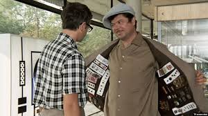
Образ интеллигента и рабочего-несуна
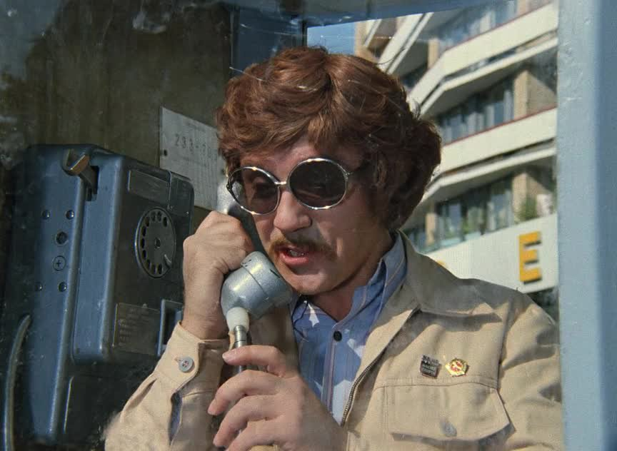
Вор, деловой человек в СССР
Образ населения
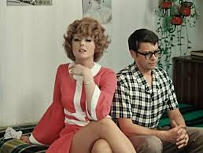
Дезориентированная молодёжь
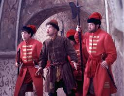
Народ и армия едины
Царь не настоящий, сомнения в лигитимности.
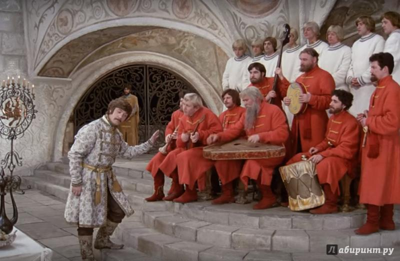
Вор, аллигархи заказывают музыку
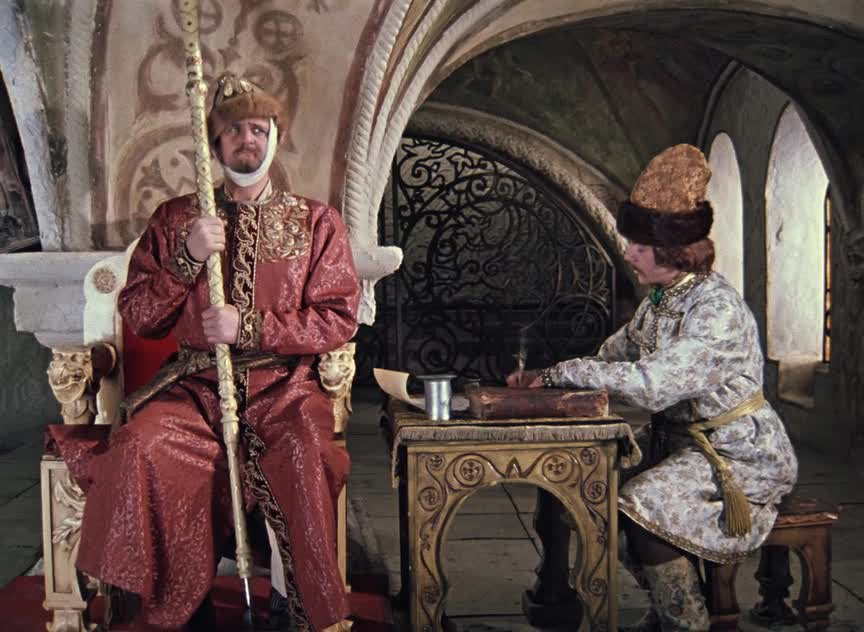
Олигархи правят
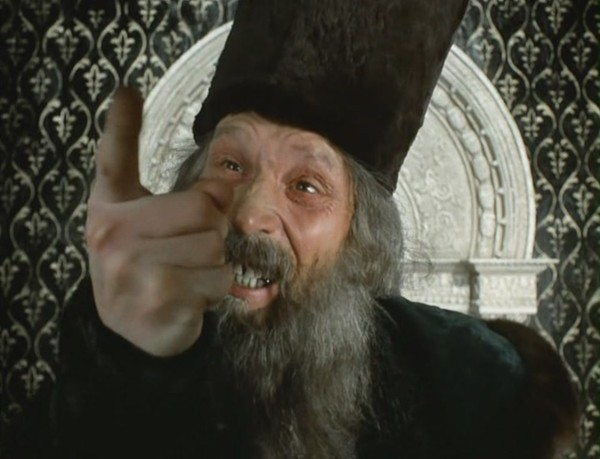
Население сомневается, что царь настоящий
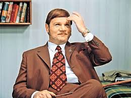
Власть, царь, генсек
Пёс смердячий - ключевая фраза фильма о застойной и не настоящей власти
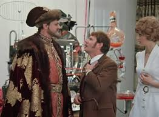
Разница властей
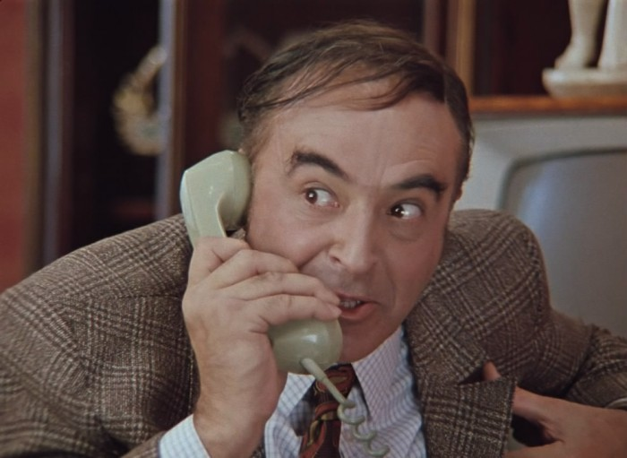
Стукач
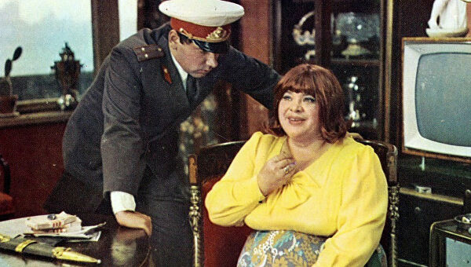
Власть и больное общество
Прошло почти 50 лет и нарисованное в фильме общество явило себя в ежедневных новостях. Борис Майоров 2019 год